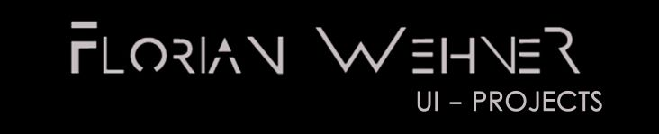
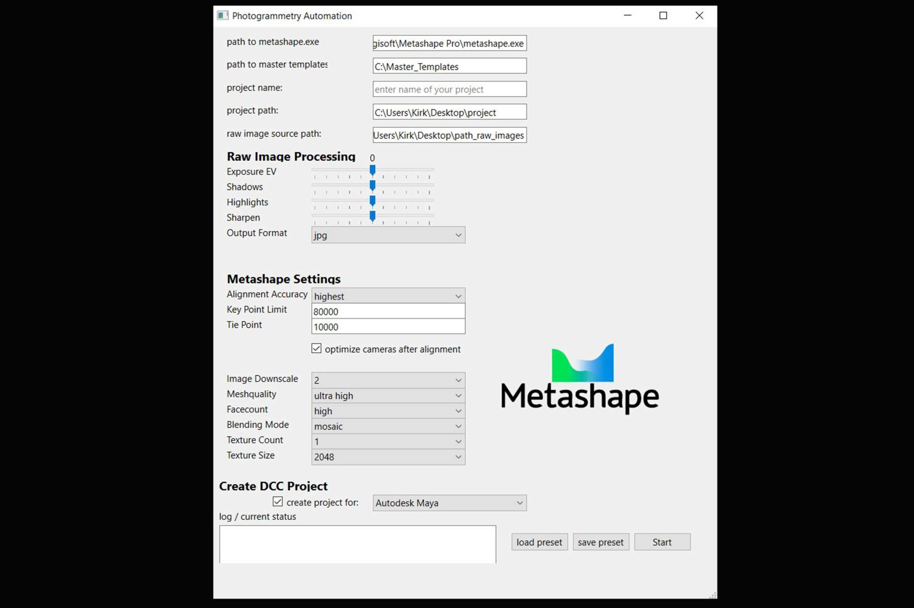

Project 1: Photogrammetry Automation Tool
This Python script provides automation for various tasks related to photogrammetry. The script utilizes PySide and Qt Designer for the graphical user interface. The GUI enables basic image processing for photogrammetry and exposes some of Metashape's most commonly used parameters for scan processing.

Project 2: Volumetric Capture Processing Tool
The Volumetric Capture Processing Tool is a Python script with a graphical user interface (GUI) built using PySide6 and QT Designer. This script facilitates the management and execution of a photogrammetry pipeline using Metashape, helping to automate the processing of hundreds of frames for volumetric capture datasets.